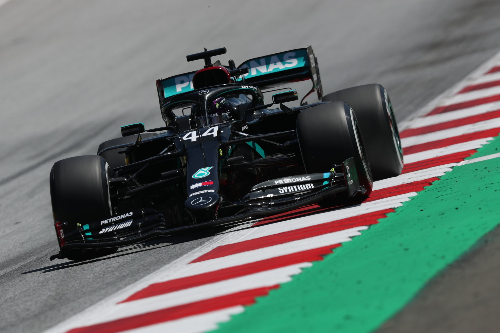
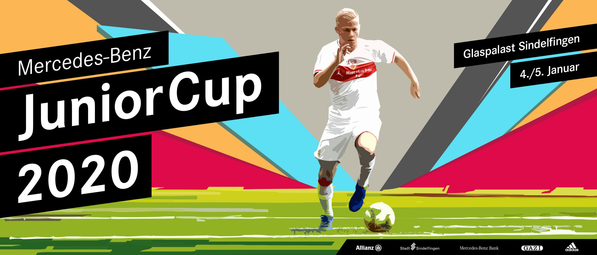
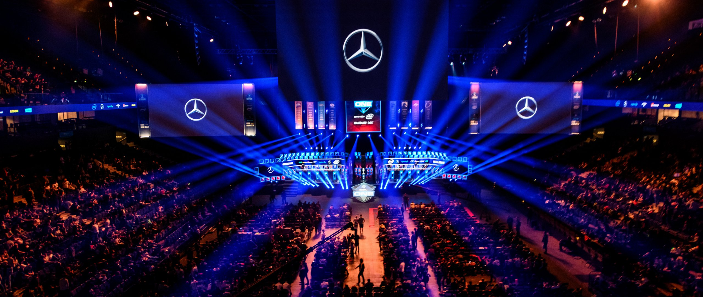

sports
Golf
For more than 30 years Mercedes-Benz has supported golf around the world, from partnering with the most prestigious majors, tournaments and players in the professional game to engaging amateurs in the largest global invitational series, the MercedesTrophy. Mercedes-Benz is a Global Sponsor of the Masters, the most prestigious major, and Official Patron of The Open, the most traditional yet innovative major. Furthermore, Mercedes-Benz supports numerous professional tournaments on the different tours throughout the world.

Formula E
Max Verstappen told his team he was in no mood to drive “like a grandma” when Red Bull asked him to manage his tyres as he hunted down the two Mercedes in the 70th Anniversary Grand Prix. He kept the pressure on – and went on to clinch a sensational win. His boss Christian Horner was suitably impressed with his performance, quipping “his grandma must drive quickly”…After an inspired and brave decision to qualify on the hard compound tyre, allowing him to start the race on that tyre while everyone else in the top 10 was on the mediums

Football
Football (or soccer as the game is called in some parts of the world) has a long history. Football in its current form arose in England in the middle of the 19th century. But alternative versions of the game existed much earlier and are a part of the football history.The first known examples of a team game involving a ball, which was made out of a rock, occurred in old Mesoamerican cultures for over 3,000 years ago. According to the sources, the ball would symbolize the sun and the captain of the losing team would be sacrificed to the gods.

eSport
eSports is a rapidly growing field, constantly creating and improving its own world and ecosystem. Millions of people all over the world are participating in eSports on‐ and offline. As a pioneer, Mercedes-Benz is embarking on an exciting journey and is helping to shape a promising future in the field of eSports. The brand’s engagement in eSports began in 2017 when it became partner of ESL, one of the largest eSports companies in the world and was deepened in October 2018 when it became the global ESL mobility partner.